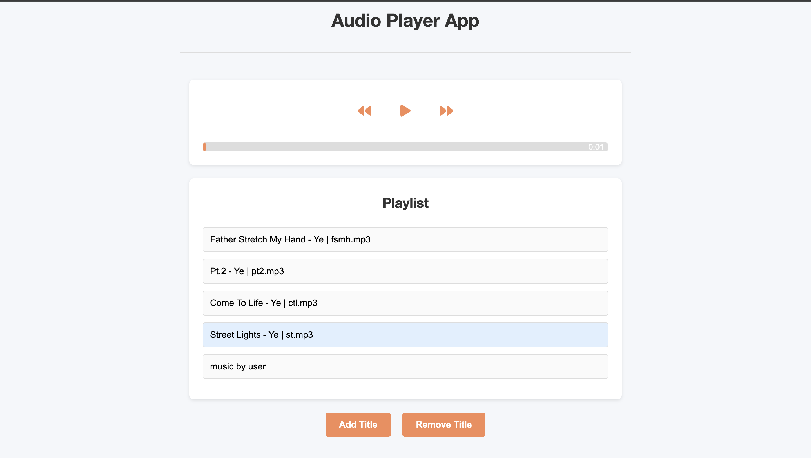
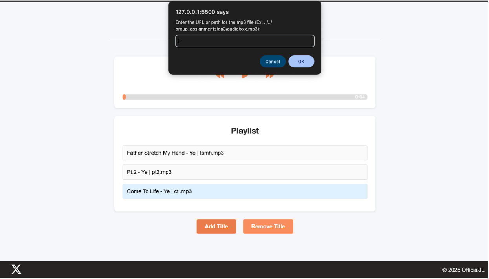

Audio Player App - Usability Test Results
Assignment Goal
Using the concepts from DMMT Chapter 9 and the Steve Krug Usability Testing video, perform a usability test on one of my existing web app projects, summarize your findings, make improvements, and document the process on your website.
Test Details
Test Date
04/23/2025
Location
At home, in a neutral, air-conditioned living room (MacBook on table, neutral chair)
Test User
Computer science major at Clemson University with interest in music, coding, and science fiction.
Recording Method
Paper and pencil documentation of user actions and feedback
Testing Phase
I have welcomed my roommate and briefed them generally what this assignment was about and to not be biased during this test. The test will be conducted on my Macbook.
I opened the audio player app and let him look around without clicking anything.
Then I assign 3 tasks for him to do:
- Play a song
- Pause a song
- Skip forward and back on a song
- Play a Specific Song
- Add a new song
User's Actions During the Test:
User scrolled around looking at the item, first clicking through all of the songs, listening to each song for a couple of seconds, he manages to pause the song ✅ and unpause the song again ✅.
He like Street Lights the most so he clicked on the song and fast forwarded with the right arrow until the chorus ✅ as well as revert 5 seconds using the left arrow ✅. He says "this is pretty cool".
User scrolled to the navbar and clicked a random assignment, I told him to focus on the study, and I made him come back to the app. He looks at the corners of the app to find hidden features. User then clicks on the song Heaven and Hell and removes the song ✅.
The user asked if that was all the tasks, I told him his last task was to add a song that I prepared in the downloads folder. He made a random title and was confused how to actually add the song working with the directory. I had to interject and tell him that you had to add the song in the directory first before referencing it ✅. This is where I saw a great area for improvement.
App Versions
Testing Process
Tasks Assigned:
- Play a song
- Pause a song
- Skip forward and back on a song
- Play a specific song
- Add a new song
User Actions & Observations:
- ✅ Successfully played and paused songs
- ✅ Effectively used forward/backward controls
- ✅ Navigated playlist and selected specific songs
- ✅ Removed a song from playlist
- ❗ Struggled with the song addition process (directory reference required)
Improvements Made
Dark Mode Toggle
- Added theme toggle button in header
- Smooth transition between modes
Loop Button Enhancement
- Visual feedback for active state
- Scale animation and color change
Local File Upload
- Direct MP3 file upload
- Replaced URL-based addition
- Persistent storage
UI Improvements
- Maintained clean design
- Enhanced visual feedback
- Improved user interaction
Reflection
Pain Points Identified:
- Lack of dark mode option
- Complicated song addition process
- Missing loop functionality
Successes:
- Clear purpose communication
- Passed trunk test
- Achieved core functionality
- Comfortable user experience